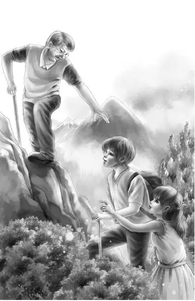

It was a fine warm day in early summer. The Aldens—Henry，Jessie，Violet，and Benny—and their grandfather were just eating lunch. They had come to dessert of apple pie and cheese.
Benny rested his head on his hand.After awhile he said，“Grandfather，do you remember a few summers ago we wanted to go mountain climbing？”
“Yes，I remember，my boy.”
“Well，do you remember we got cheated out of it？Joe and Alice had to go abroad and we couldn’t go alone.”
Henry said，“Benny will never forget that. We went to see Aunt Jane at Mystery Ranch instead.”
Benny said，“Well，I wondered where we were going that summer，if we had gone. What mountain were we going to climb？”
“Benny，does all this mean you want to go mountain climbing？” asked Mr. Alden. He couldn’t help laughing.
“Yes，it does，” said Benny.“Maybe not the same mountain.”
“No，indeed，it won’t be，” said Mr. Alden.“That year I was going to take you up in the Rockies. No more of that. We’ll have to choose Old Flat Top because I don’t want Violet getting all tired out with a long climb. And I don’t want me getting all tired out either. The rest of you are tough enough.”
Grandfather looked up to see that every Alden was looking at him. The four shining faces answered him. There were four nods.
“You do have the strangest ideas，Benny，” said Jessie.“What put that into your head？”
“Well，” said Benny，“I’ve been reading about that place in school.”
“About Flat Top？” asked Violet.
“Oh， you have，have you？” said Henry.“You chose Flat Top yourself？”
“Right，” said Benny.“I don’t want to climb too much myself. I get lame.”
Mr. Alden said，“Well，my answer is yes. Old Flat Top is easy enough for all of us，and yet it is interesting all the way up. And we’ll all be able to get a good rest on the smooth top.”
“Just like airplanes landing on an airplane carrier，” said Benny.
“That’s exactly right，my boy，” said Grandfather. “Only this flat top is twice as big as a carrier.”
Benny finished his apple pie and put down his fork. “Then the only question is when. Let’s go right away.”
Everyone laughed. Benny and Grandfather were so much alike. When they wanted anything they wanted it right away.
“What do you mean by right away？”asked Grandfather，smiling.“You mean this minute？If you do，we could go this minute，very easily. It is only a day’s trip. You climb up Flat Top，eat lunch，and climb down. There is just time in one day. Nobody spends the night there.”
“How do you know all this，Grandfather？” asked Henry.
“Oh，I had a friend who made that trip last summer. He said it was exactly right for his wife，and they had a fine time. Near the foot of the mountain is a general store. The men give you poles and a lunch and directions. They always leave a lot of firewood all cut for a campfire to cook your lunch on the flat top. This place isn’t for real mountain climbers. It’s for old men and children.”
Henry laughed. He knew that it was a real mountain. Grandfather was having a good time teasing them.
“Do you mean we can really go today？” asked Jessie.
“Well，no，” Grandfather answered.“I should say tomorrow would be better because we must have a full day. We can drive to Old Flat Top in two hours. What time do you want to get up，Benny？You’re the sleepy one.”
“I’ll get up at five，” said Benny.“I did when we went to the lighthouse.”
“So you did. Five it is. Lay out some sport clothes. Better take some extra clothes. We may want to go on somewhere else. And another thing，we can’t take Watch. He’ll just be in the way.”
“That’s right，” said Henry.“He will do nothing but whine. He doesn’t like to see us do anything dangerous.”
Mr. Alden looked thoughtful and then said，“I believe that Dr. Percy Osgood is working somewhere in the range not too far from Old Flat Top. How about it，Benny，does that name mean something to you？”
Benny shook his head. But Henry said，“Osgood？It means something to me. He was the author of a book on geology I read for a college course last year.”
“Right！” Grandfather said.“Percy is on a hunt for some fossils. If John Carter can find out where he is for me we might pay him a visit. I haven’t seen Osgood for years，but I don’t suppose he’s changed much.”
The Aldens went to pack and Grandfather made a phone call to John Carter. It was too bad Benny wasn’t around to hear some of the plans being made. But he and the others were busy packing.
There was not much sleep in the Alden house that night. At five o’clock everyone was wide awake and downstairs eating breakfast.
“I have two flashlights，” said Henry，“and some batteries and the binoculars. You can see the view better.”
Grandfather said，“We’ll get the lunch at the store and water and either coffee or cold drinks in bottles. We can buy anything we need.”
The day was beautiful. It was warm even in the early morning. They all knew it would be cooler on Flat Top，and they each had a warm sweater.
When they reached the mountain range，Violet said，“Oh，isn’t this lovely！”
“That’s Old Flat Top，” said Benny，pointing. It was the lowest mountain in the range. Other peaks went much higher into the sky. Some looked blue in the distance. Others looked violet. Others looked green. But Flat Top was so near it looked green almost all the way up. The top was all solid rock.
“Hey！” said Henry.“There is the store. It seems to be made of logs.” He stopped the car at the door and they all went into the store. Old Flat Top towered right over them.
“Just right，” said Benny.“Not too high. Not too steep. Just right，just a good healthy climb and a grand view at the top.” Then he thought，“Isn’t it queer that this store man seems to know Grandfather？”
The two men were shaking hands，and Grandfather just said，“Fit us out for Flat Top，won’t you？”
The man said，“You each need a pack on your back to carry your lunch. You’ll need five poles. I should think that would be enough. You’ll find the path is well marked，but there’s only one. And remember that there is no other path down.”
“I’d like to go first，” said Benny.
“I’m sorry to disagree with you，Benny，” said Mr. Alden.“I should like to go first.”
“Oh，” said Benny，“of course，you should go first. That’s OK.”
“Thanks，” said Mr. Alden.
Up they went. It was true that the path was well marked. The trees were marked with knotted strips of red cloth. It was a little hard in some places，but the poles were a great help. Each climber had a pack on his back.
Up and up they went. Violet was right behind Grandfather. Benny still wished he could be the leader，but he thought he had better mind his grandfather at this point.
It took the Aldens three hours to reach the first stop.
“See the sign？” said Henry.“Lunch Here. The man said we must eat just half of our lunch here.”
“I have never been so hungry in my life，” said Benny.
“Oh，yes，you have！” joked Henry.“Almost every meal you eat. And be careful how much water you drink. That’s the thing we have to save.”
Soon they were ready to go on. When they were almost at the top they noticed there were no more bushes，no more trees，no more grass. It was all gray rock.
Grandfather looked ahead. He could see the last two steps very well. He noticed that the last step was a big one，and he was glad he had gone first. With his pole，he reached the very top where it was flat. He turned around and gave a hand to Violet. Then he helped Jessie up，and reached way down to help Benny. With his pole，Henry climbed up by himself.

They all looked around.“This is as big as our own front yard，” said Jessie.
“What a view，” said Benny.“The town is over there，and nothing but woods there at the foot of the mountain.”
Henry said，“Here is the woodpile for campfires and a fireplace. This is where we can cook the rest of our lunch.”
It never entered anyone’s head，even Grandfather’s， that a fire might be needed to keep them warm.